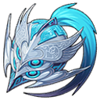
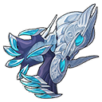
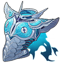
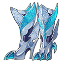
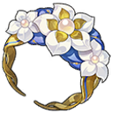
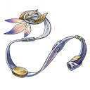

추천 광추
해 질 무렵 시작되는 춤
피격 확률 상승과 필살기·추가 공격 피해
효과 자세히
피격 확률 증가, 치명타 피해 +36%. 필살기마다 추가 공격 피해 +36%(2턴, 최대 2스택).
이와 같이 타오르는 여명
방어력 무시, 필살기 후 피해 증가
효과 자세히
기초 속도 +12, 방어력 18% 무시. 필살기 후 자신의 다음 턴이 시작되기 전까지 피해 +60%.
닿을 수 없는 저편
치명타 확률·HP와 피격 후 피해
효과 자세히
치명타 확률이 18% 증가하고, HP 최대치가 18% 증가. 피격되거나 자신의 HP를 소모한 후 가하는 피해가 24% 증가. 해당 효과는 공격을 발동한 후 해제된다
어떤 에이언즈의 몰락
반격을 포함한 연속 공격으로 공격력 중첩
효과 자세히
공격 발동 시 이번 전투에서 공격력이 16% 증가. 해당 효과 최대 중첩수: 4스택. 장착한 캐릭터는 적의 약점을 격파한 후 가하는 피해가 24% 증가. 지속 2턴
푸른 하늘 아래
공격력, 마무리 처치 후 치명타 확률
효과 자세히
공격력이 32% 증가. 장착한 캐릭터는 적을 처치한 후 치명타 확률이 24% 증가. 지속 3턴
추천 유물
바람과 구름을 가르는 용맹함 4 · 질주하는 늑대의 도람 왕조 2
- 머리

주옵션HP부옵션치명타 확률 · 치명타 피해 · 공격력% · HP% - 손

주옵션공격력부옵션치명타 확률 · 치명타 피해 · 공격력% · HP% - 몸통

주옵션치명타 확률 / 치명타 피해부옵션치명타 확률 (주옵션 제외) · 치명타 피해 (주옵션 제외) · 공격력% · HP% - 다리

주옵션공격력%부옵션치명타 확률 · 치명타 피해 · HP% - 구체
 주옵션물리 피해 증가부옵션치명타 확률 · 치명타 피해 · 공격력% · HP%
주옵션물리 피해 증가부옵션치명타 확률 · 치명타 피해 · 공격력% · HP% - 매듭
 주옵션공격력%부옵션치명타 확률 · 치명타 피해 · HP%
주옵션공격력%부옵션치명타 확률 · 치명타 피해 · HP%
이 조합을 추천하는 이유
용맹 → 추가 공격 후 필살기 피해 +36%. 도람은 파티의 추가 공격으로 중첩을 쌓고 최대 중첩 시 치명타 피해 +25%.
망국을 애도하는 시인 4 · 회전을 멈춘 살소토 2
- 머리

주옵션HP부옵션치명타 확률 · 치명타 피해 · 공격력% · 효과 저항 - 손
 주옵션공격력부옵션치명타 확률 · 치명타 피해 · 공격력% · 효과 저항
주옵션공격력부옵션치명타 확률 · 치명타 피해 · 공격력% · 효과 저항 - 몸통
 주옵션치명타 확률 / 치명타 피해부옵션치명타 확률 (주옵션 제외) · 치명타 피해 (주옵션 제외) · 공격력% · 효과 저항
주옵션치명타 확률 / 치명타 피해부옵션치명타 확률 (주옵션 제외) · 치명타 피해 (주옵션 제외) · 공격력% · 효과 저항 - 다리
 주옵션공격력%부옵션치명타 확률 · 치명타 피해 · 효과 저항
주옵션공격력%부옵션치명타 확률 · 치명타 피해 · 효과 저항 - 구체
 주옵션물리 피해 증가부옵션치명타 확률 · 치명타 피해 · 공격력% · 효과 저항
주옵션물리 피해 증가부옵션치명타 확률 · 치명타 피해 · 공격력% · 효과 저항 - 매듭

주옵션공격력%부옵션치명타 확률 · 치명타 피해 · 효과 저항
이 조합을 추천하는 이유
시인 4세트는 전투 진입 전 속도 95 미만이면 치명타 확률 +32%. 속도 부옵을 억제하세요.
이 정도면 잘 키웠다
동일 파티·광추 기준 · 조건 [*]
| 스탯 | 추천 스탯 | 준종결 | 종결 |
|---|---|---|---|
| 치명타 확률 [*] 시인·동료 버프 포함. 반격의 안정적인 치명타를 우선. | 90% | 95% | 100% |
| 치명타 피해 [*] 필살기 자체의 치명타 피해 보너스 제외. | 100% | 110% | 120%+ |
| 공격력 [*] Lv.80 광추와 공격력 신발 기준. | 3,200 | 3,300 | 3,400+ |
| 속도 [*] 반격은 적 행동을 따라 발생하며 시인 치명타 조건에 유리합니다. | 94 | 94 유지 | 저속 유지 |
육성 단계의 기준
Lv.80 · 5성 유물 +15. Prydwen 참고 범위와 발동 조건을 바탕으로 나눈 편집 목표입니다.
성혼과 추천 돌파
성혼 1과 2는 반격 피해를 키웁니다. 전용 광추의 피격 확률 지원은 적 행동 연결에도 도움이 됩니다.
1간파 피해 +20%·간파•멸 추가 타격 +3회추천
간파•참과 간파•멸이 가하는 피해가 20% 증가하고, 간파•멸의 추가 피해 횟수가 3회 증가
2반격 방어력 20% 무시추천
반격을 발동해 피해를 가할 시 적의 방어력을 20% 무시한다
3필살기 +2 · 일반 공격 +1
필살기 +2 · 일반 공격 +1
4간파 후 효과 저항 +50%(1턴)
간파•참 또는 간파•멸 발동 후 자신의 효과 저항이 50% 증가. 지속 1턴
5전투 스킬 +2 · 특성 +2
전투 스킬 +2 · 특성 +2
6직접 스킬에 간파•멸 발동·치명타 확률 +15%·물리 저항 관통 +20%
막기 상태일 때, 적이 스킬을 직접 발동할 시 운리를 공격하는지와 상관없이 간파•멸을 발동하고 동시에 막기 효과를 해제한다. 간파•참 또는 간파•멸을 발동해 피해를 가할 시 치명타 확률이 15% 증가하고, 물리 속성 저항 관통이 20% 증가
추천 파티


기본 운영과 행적
기본 운영
적 행동 직전에 필살기를 쓰고 막기 상태에서 운리가 공격받게 하세요. 필살기를 쓴 직후에 아군 행동이 들어오면 막기가 먼저 끝날 수 있습니다.
행적 우선순위
필살기 > 특성 > 전투 스킬 = 일반 공격. 반격과 필살기 전용 공격을 우선 강화하세요.
아하 속도 계산기 →기준과 출처 · 2026-11-25
4.7 · 한국어 게임 데이터 및 Prydwen 육성 분석